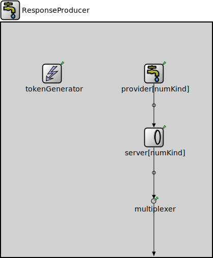

Package: inet.queueing.source
ResponseProducer
compound moduleThis module is capable of generating several different streams of packets, one after the other. For each traffic category, the packets are produced by a separate token based server. The traffic stream can be started by adding tokens the corresponding server module. The packet data, packet length, and timing distributions can be configured in the corresponding packet provider.
<b>See also:</b> ~RequestConsumer
Usage diagram
The following diagram shows usage relationships between types. Unresolved types are missing from the diagram.
Inheritance diagram
The following diagram shows inheritance relationships for this type. Unresolved types are missing from the diagram.
Used in
| Name | Type | Description |
|---|---|---|
| RequestResponseTutorialStep | network | (no description) |
Parameters
| Name | Type | Default value | Description |
|---|---|---|---|
| numKind | int | ||
| requestConsumerModule | string | "^.sink" |
Properties
| Name | Value | Description |
|---|---|---|
| display | i=block/source |
Gates
| Name | Direction | Size | Description |
|---|---|---|---|
| out | output |
Unassigned submodule parameters
| Name | Type | Default value | Description |
|---|---|---|---|
| provider.displayStringTextFormat | string | "created %p pk (%l)" |
determines the text that is written on top of the submodule |
| provider.packetNameFormat | string | "%a-%c" |
see directives in module documentation |
| provider.packetRepresentation | string | "byteCount" |
determines the chunk of the packet data |
| provider.packetProtocol | string | "unknown" | |
| provider.packetLength | int | ||
| provider.packetData | int | -1 | |
| provider.attachCreationTimeTag | bool | true | |
| provider.attachIdentityTag | bool | true | |
| provider.attachDirectionTag | bool | true | |
| provider.clockModule | string | "" |
relative path of a module that implements IClock(1,2); optional |
| provider.initialProvidingOffset | double | 0s |
initial duration before which packets are not provided |
| provider.providingInterval | double | 0s |
elapsed time between subsequent packets allowed to be pulled by the connected packet collector, 0 means any number of packets can be pulled at the same simulation time |
| provider.scheduleForAbsoluteTime | bool | true |
when a clock is used relative means that setting the clock will not affect the simulation time of the event |
| server.displayStringTextFormat | string | "contains %n tk\nserved %p pk (%l)" |
determines the text that is written on top of the submodule |
| server.initialNumTokens | double | 0 |
initial number of tokens |
| server.maxNumTokens | double | nan |
maximum number of tokens |
| server.tokenConsumptionPerPacket | double | 1 |
how many tokens are consumed per processed packet |
| server.tokenConsumptionPerBit | double | 0 |
how many tokens are consumed per processed bit |
| multiplexer.displayStringTextFormat | string | "passed %p pk (%l)" |
determines the text that is written on top of the submodule |
| multiplexer.forwardServiceRegistration | bool | true | |
| multiplexer.forwardProtocolRegistration | bool | true | |
| tokenGenerator.displayStringTextFormat | string | "generated %t tk\nto %s" |
determines the text that is written on top of the submodule |
| tokenGenerator.storageModule | string | "^." + parent.requestConsumerModule + ".server" |
module path of the token storage where the tokens are generated via C++ method call |
| tokenGenerator.subscriptionModule | string | "^" | |
| tokenGenerator.signals | string | "tokensDepleted" | |
| tokenGenerator.numTokens | double | 1 |
number of tokens generated repeatedly |
Source code
// // This module is capable of generating several different streams of packets, // one after the other. For each traffic category, the packets are produced by // a separate token based server. The traffic stream can be started by adding // tokens the corresponding server module. The packet data, packet length, and // timing distributions can be configured in the corresponding packet provider. // // @see ~RequestConsumer // module ResponseProducer like IActivePacketSource { parameters: int numKind; string requestConsumerModule = default("^.sink"); @display("i=block/source"); gates: output out; submodules: provider[numKind]: PassivePacketSource { @display("p=300,100,row,200"); } server[numKind]: TokenBasedServer { @display("p=300,225,row,200"); } multiplexer: PacketMultiplexer { @display("p=300,350"); } tokenGenerator: SignalBasedTokenGenerator { storageModule = default("^." + parent.requestConsumerModule + ".server"); signals = default("tokensDepleted"); @display("p=100,100"); } connections: for i=0..sizeof(provider) - 1 { provider[i].out --> server[i].in; server[i].out --> multiplexer.in++; } multiplexer.out --> { @display("m=s"); } --> out; }File: src/inet/queueing/source/ResponseProducer.ned
 This documentation is released under the Creative Commons license
This documentation is released under the Creative Commons license